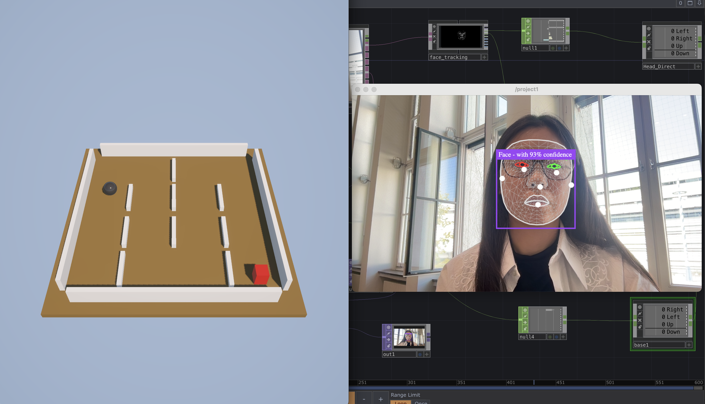
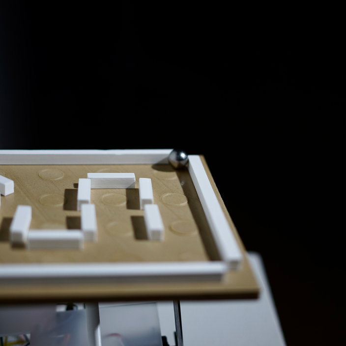
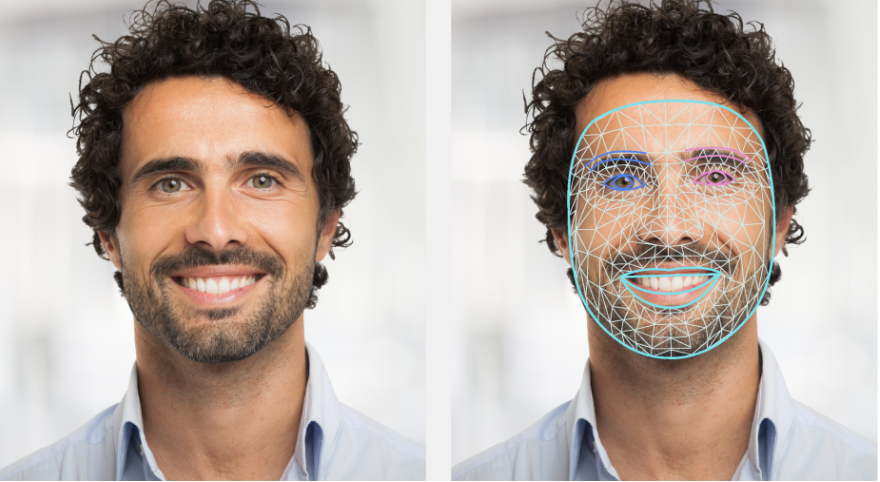
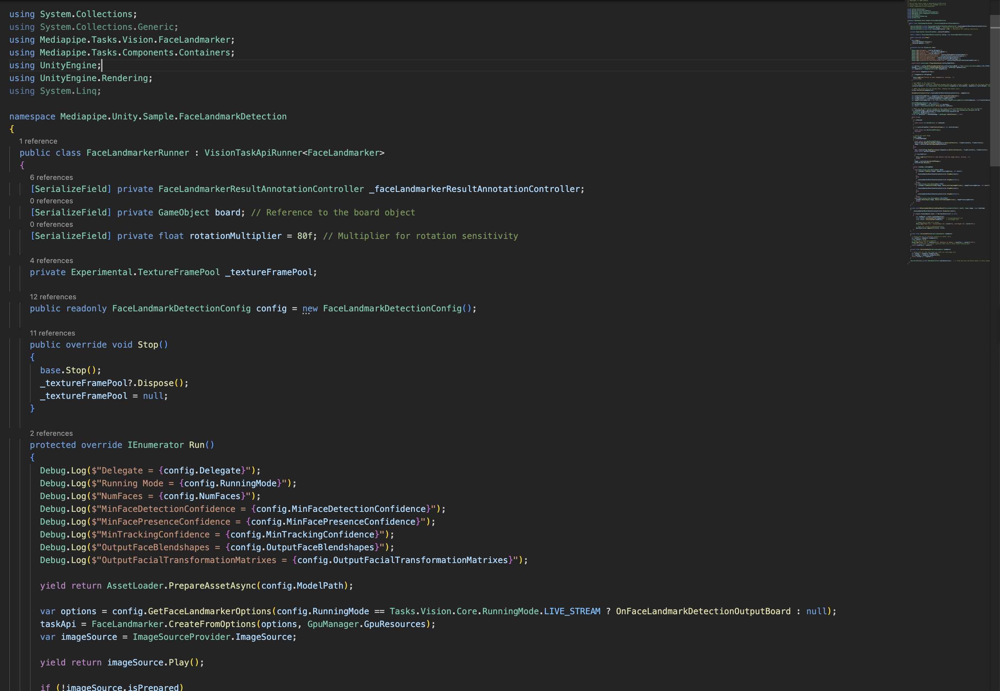
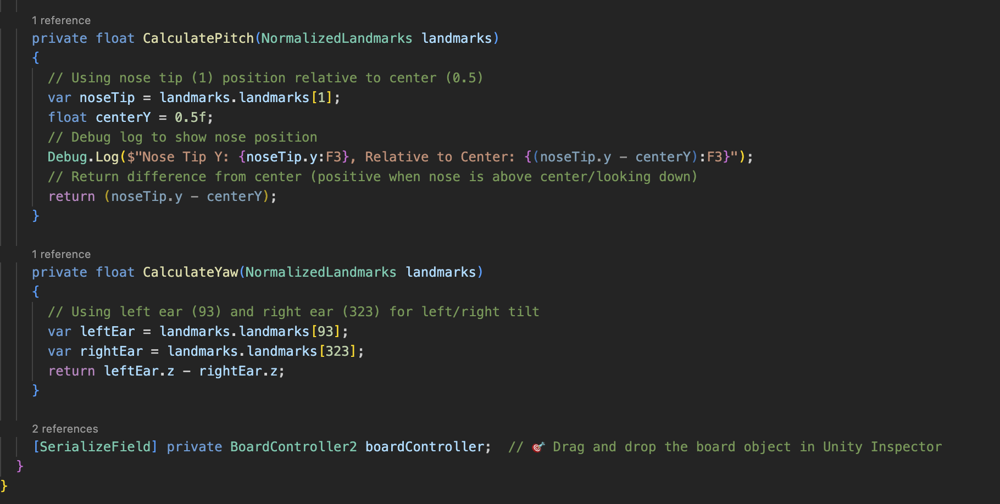
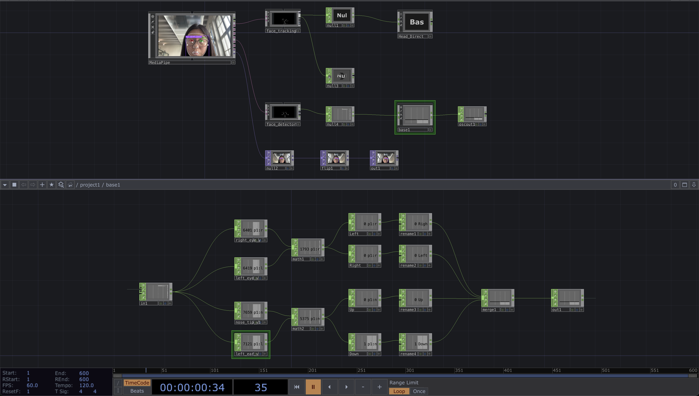
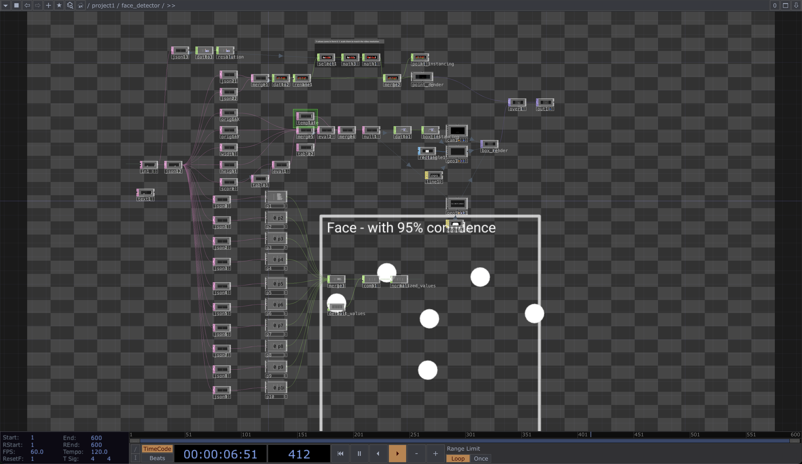
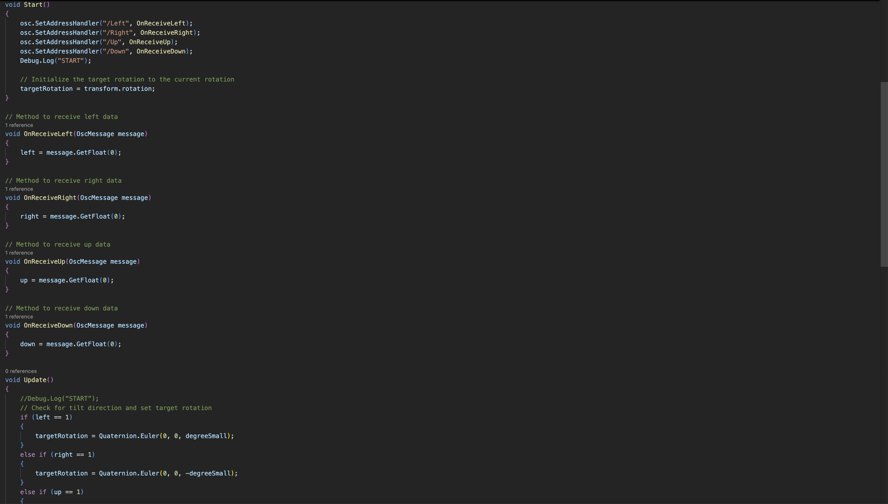

An iterative exploration of head-movement interaction (nodding & shaking) to control a tilting board and rolling ball. Starting from a physical prototype, I moved into Unity for digital prototyping, and later integrated TouchDesigner for smoother signals and exhibition-ready visuals.
Role: Creative Technologist / UX
Tech: Unity, TouchDesigner, MediaPipe
Focus: Natural Interaction, Embodied Control, Realtime Graphics
Year: 2025

Physical Roots (Brief)
The project began as a tangible tilt-board with a rolling ball to validate the embodied interaction concept. For full details, see the dedicated page: Minds-On →

Unity Digital Prototype
I rebuilt the tilt-board in Unity to allow faster iteration and rule testing.
Head nodding maps to forward/backward tilt, while shaking maps to left/right tilt.
I implemented clamped angles and smoothing to keep motion stable and responsive.
1) MediaPipe Face landmark detection
The MediaPipe Face Landmarker task lets user detect face landmarks and facial expressions in images and videos. More info →

2) MediaPipe, Natively in Unity
Using MediaPipe inside Unity (create task → open camera → feed frames → run inference → visualize)

3) Calculation: Nods & Shakes → Board Tilt
Direction: From landmarks — nose vs. vertical center gives forward/back (pitch sign); left ear vs. right ear z gives left/right (yaw sign).
Angle: Normalize and gain these offsets to get a [-1,1] intensity, and smooth to produce the final tilt.

Unity + TouchDesigner Hybrid
For richer visuals and smoother input, I integrated TouchDesigner. TD handles preprocessing and visualization; Unity focuses on physics and game logic. This modular pipeline is ideal for exhibitions and scalable to multi-user setups.
1) Workflow in TouchDesigner
Use a community-made MediaPipe component/plugin.

2) Facial feature extraction
Read landmarks for nose tip, left/right eyes, ears; Compute Left/Right from the eyes’ vertical difference and Up/Down from the nose–ear vertical difference, normalize and smooth them.

3) OSC
Stream the four directional intensities via OSC to Unity for tilt control.

Comparison
| Phase | Strengths | Limitations |
|---|---|---|
| Physical Prototype | Intuitive, embodied; quick concept validation. | Slow iteration; setup constraints. |
| Unity-only | Fast prototyping; stable physics; single-app. | Less flexible input; visuals less show-ready. |
| Unity + TouchDesigner | Smoother input; live HUD; exhibition routing. | More complex; OSC/sync to maintain. |
Reflection
This project illustrates my thinking process: from embodied prototype to digital simulation, and finally to a cross-platform hybrid. Each phase was a deliberate step to test new possibilities and push interaction design further.